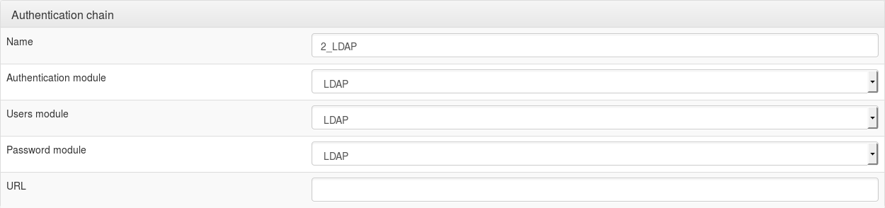

| Authentication | Users | Password |
|---|---|---|
| ✔ | ✔ | ✔ |
By default, only the configured authentication backend is available for users.
Contrary to multiple backend stacking, backend choice will present all available authentication methods to users, who will choose the one they want.
The choice will concern three backends:
The chosen backends will be registered in session:
$_auth$_userDB$_passwordDBAuthentication choice will also be registered in session:
$_authChoice
In Manager, go in General Parameters > Authentication modules and choose Choice for authentication.
Choice is selected for authentication, values for Users and Password modules are also forced to Choice.
Then, go in Choice Parameters:
lmAuth)New chain to add a choice.

Define here:
test1.example.com, you can set this condition:$env->{urldc} =~ /test1\.example\.com/
lemonldap-ng.ini in section [portal]:[portal] pdataDomain = example.com